Beyond Standardised Guidelines
An Explainable Machine Learning Case Study for Model-Guided Ecotoxicological Study Designs

LBBE – UCB Lyon 1 (UMR CNRS 5558) | Ecotox – INRAE
FR BioEEnViS Knowledge-Sharing Seminar · December 16, 2026 · Part 2: Technical Case Study
Connecting Part 1 to Practice: Why Explainable ML as a Meta-Model?
Bridging Part 1’s modelling epistemology to our ecotoxicological case study: operating strictly at the White Box + Grey Box intersection.
Two-Stage Meta-Modelling Architecture
Machine learning here does not replace the biological model. Instead, it audits how laboratory inputs govern mechanistic inference:
- Stage 1 — White Box Core: Mechanistic survival models (GUTS and DR) calibrated on empirical survival data.
- Stage 2 — Grey Box xAI Audit: Explainable ML linking experimental design features (\(X\)) to parameter precision and accuracy (\(Y\)).
- Deliberate Exclusion: We avoid Deep Learning / Neural Networks, which are ill-suited to this sample regime and opaque to regulators.
Three-Point Rationale
- Moderate Tabular Sample Size (\(n = 216\) datasets): Structured tabular data with low-to-moderate \(n\) favour tree ensembles over deep architectures, limiting overfitting.
- Regulatory Auditability (EFSA / OECD): Environmental risk assessment requires transparent, inspectable links between experimental choices and model outputs.
- Protocol Design, Not Black-Box Prediction: Our goal is to derive actionable laboratory guidelines, not to deploy an unexamined predictive oracle.
From Everyday Products to Freshwater Risk: Where We Work
Regulatory context for non-ecotoxicologists: tracing agricultural chemical inputs to aquatic toxicity modelling.
Everyday Products to Aquatic Exposure
Apple, Red Wine, Baguette \(\rightarrow\) large-scale agriculture uses Plant Protection Products (PPPs) \(\rightarrow\) runoff into freshwater ecosystems.
EU Environmental Risk Assessment (ERA) Pipeline
Problem Formulation \(\rightarrow\) Exposure Assessment vs. Effect Assessment \(\rightarrow\) Risk Characterisation \(\rightarrow\) EU approval (e.g., Captan renewed until 2039).
Our modelling work operates directly inside Effect Assessment: estimating how toxic a chemical is to aquatic organisms.
The Scale Crisis & The Legacy Regulatory Clash
The Scale & Ethical Bottleneck
- \(>350,000\) registered chemicals globally; \(19,670\) mapped across EU frameworks; \(1,474\) PPPs in the EU database.
- \(440,000\)–\(2.2\text{ million}\) fish and birds used annually (\(>\$39\text{M/yr}\); Schür et al., 2025) \(\rightarrow\) ethical and economic imperative for Predictive Ecotoxicology.
Chemical inventory scale vs. annual animal testing burden.
The Historical Mismatch
- ~1980s OECD Test Guidelines: Built for static, frequentist, fixed-time endpoints like \(LC(50, 96\text{h})\) via Dose-Response (DR) models (Daniels et al., 2026).
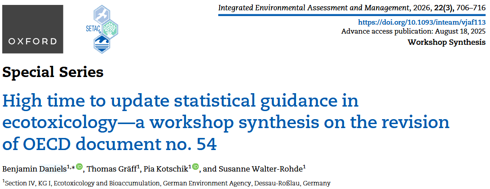
- 2018+ EFSA Shift: Recommends dynamic TKTD mechanistic models—specifically GUTS (General Unified Threshold model of Survival)—for time-variable risk assessment (EFSA, 2018).
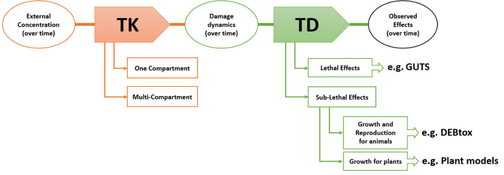
Our Objective
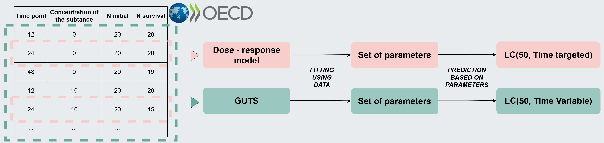
How do experimental design features influence DR and GUTS parameter precision?
The Empirical Landscape & Why Data Quality Comes First
Mapping 216 time-resolved survival datasets across organisms, substances, and exposure profiles.
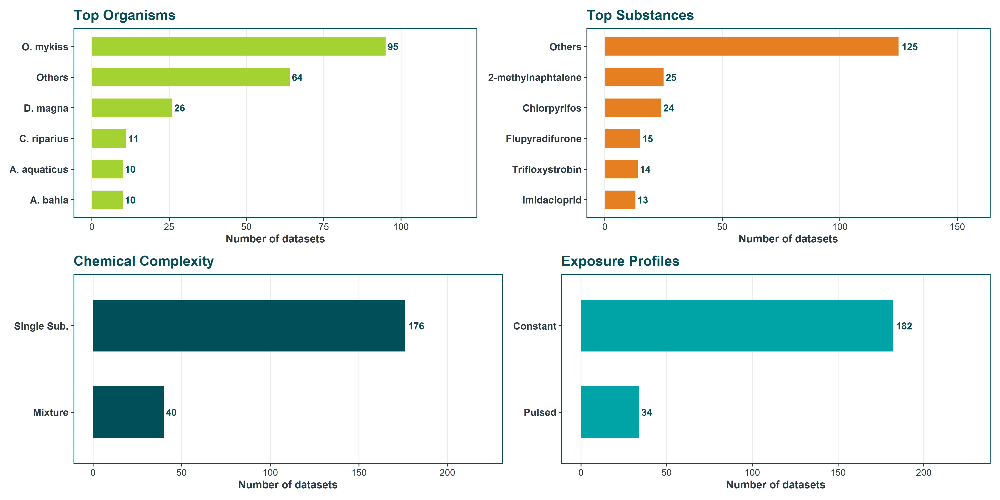
Dataset Conceptualisation
\[\mathcal{D} = (\mathbf{N}, \mathcal{E})\]
Separating raw survival records (\(\mathbf{N}\)) from structured experimental context (\(\mathcal{E}\)):
- Organism–substance Archetype
- OECD regulatory constraints
- Mechanistic model requirements
Data Quality Audit Example
A study labelled “constant exposure” whose measured concentration decays over time.
Experimental Design Features (All 216 Datasets)
Characterising the experimental design features across all 216 time-resolved survival datasets.
OECD TG Constraints
Minimum experimental criteria specified by each OECD Test Guideline corresponding to our database characteristics.
Mechanistic Model Requirements
Specific experimental design features required to ensure identifiability and parameter precision according to EFSA (2018) and Jager & Ashauer (2025).
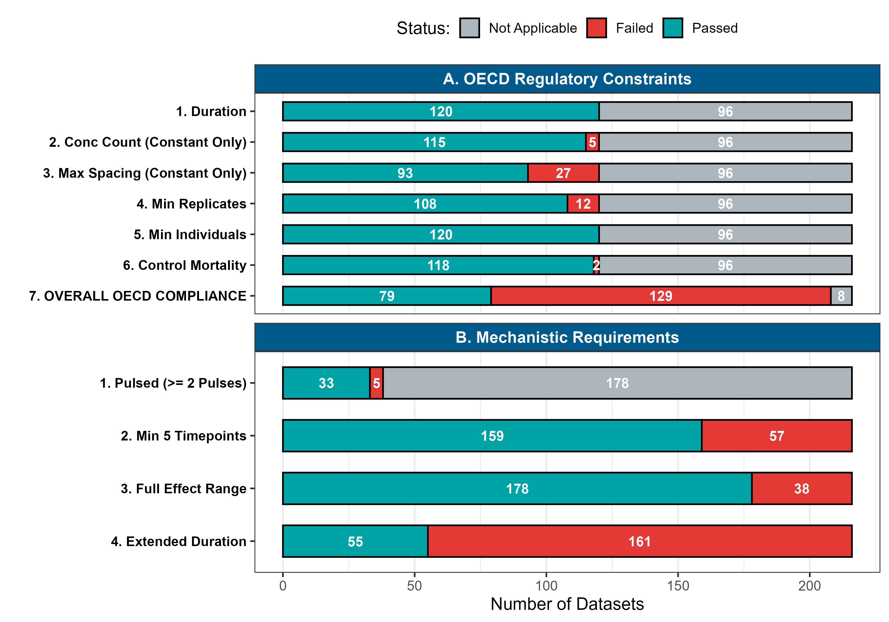
Analytical Subset: Trout & Daphnia
Isolating a focused analytical subset: Trout (O. mykiss) and Daphnia (D. magna).
Why this subset?
- Represents ~50% of the full 216-dataset database.
- Preserves the categorical design proportions observed across all 216 datasets.
Next Methodological Step
- Define a formal precision metric to address our objective: How do experimental design features influence DR and GUTS parameter precision?
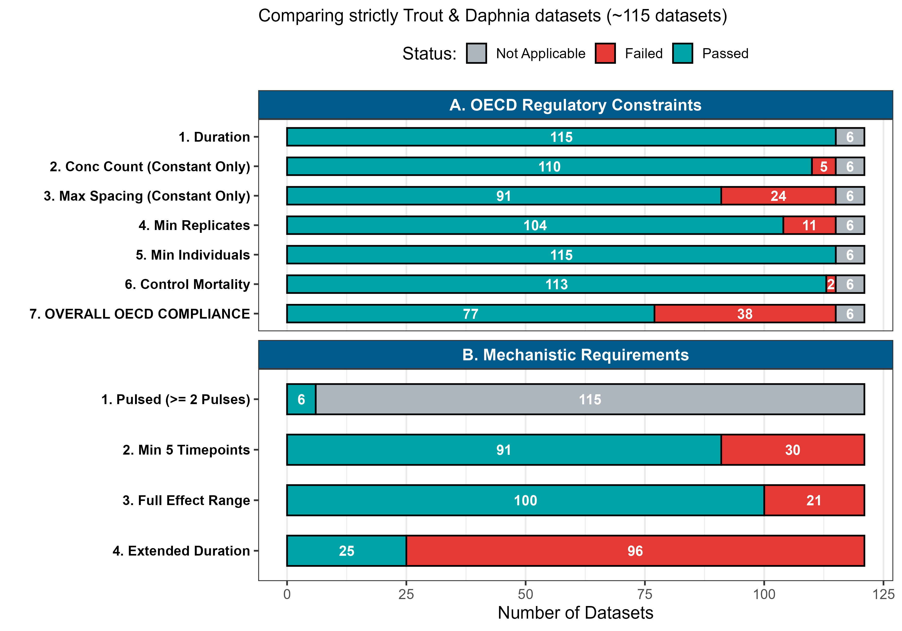
Two-Stage Hybrid Architecture: Stage 1 \(\rightarrow\) Stage 2
“How precise are the parameters?”
[ X: Design features | Y: Parameter Precision ]
→
Non-linear mapping from design features to precision
%IncMSE)“How relevant is \(X\) to predict \(Y\) when non-linear relationships are involved?”
“Does \(\theta\) match training data?”
“How well does \(\theta\) predict unseen data?”
Transparency Note: The empirical results shown next represent our methodological Proof-of-Concept on the active pipeline (Stage 1 Precision \(\rightarrow\) Stage 2 xAI).
The Data Analysis \(\rightarrow\) ML Bridge
In regulatory ecotoxicology, black-box AI faces justified skepticism. Every step toward ML must be documented.
1. Descriptive
Compute the precision metrics and visualise them by experimental design feature.
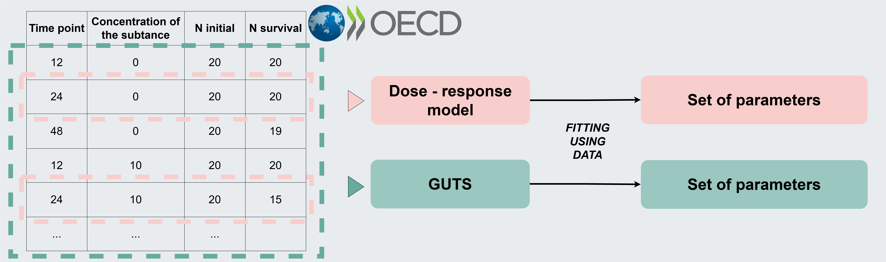
The Data Analysis \(\rightarrow\) ML Bridge
In regulatory ecotoxicology, black-box AI faces justified skepticism. Every step toward ML must be documented.
1. Descriptive
Compute the precision metrics and visualise them by experimental design feature.
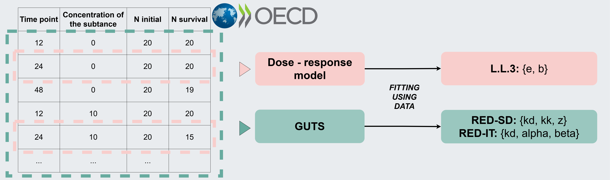
The Data Analysis \(\rightarrow\) ML Bridge
In regulatory ecotoxicology, black-box AI faces justified skepticism. Every step toward ML must be documented.
1. Descriptive
Compute the precision metrics and visualise them by experimental design feature.
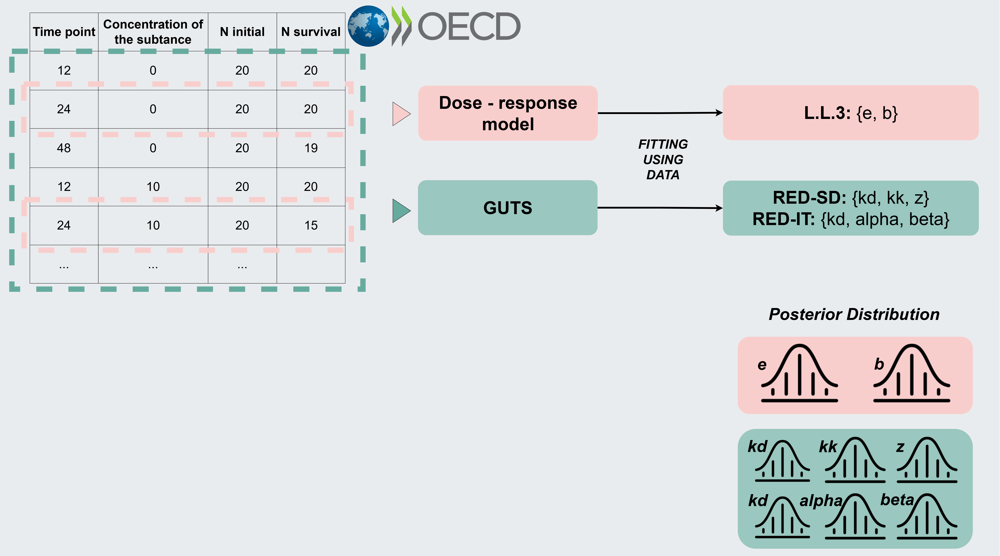
The Data Analysis \(\rightarrow\) ML Bridge
In regulatory ecotoxicology, black-box AI faces justified skepticism. Every step toward ML must be documented.
1. Descriptive
Compute the precision metrics and visualise them by experimental design feature.
1.1 Precision Metrics
- Coefficient of Variation (CV): Individual parameter uncertainty.
- Parameter Uncertainty Index (PUI) (Bauer et al., 2024): Global precision metric.
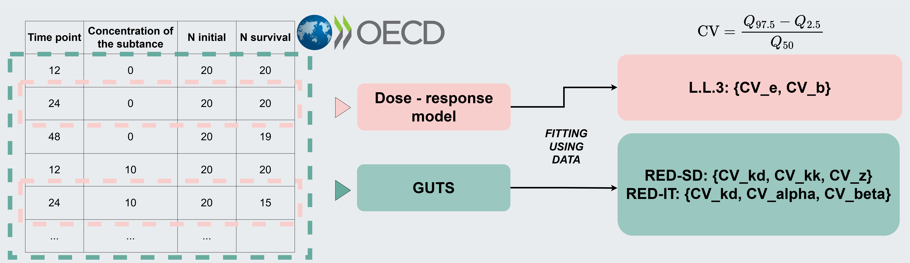
The Data Analysis \(\rightarrow\) ML Bridge
In regulatory ecotoxicology, black-box AI faces justified skepticism. Every step toward ML must be documented.
1. Descriptive
Compute the precision metrics and visualise them by experimental design feature.
1.1 Precision Metrics
- Coefficient of Variation (CV): Individual parameter uncertainty.
- Parameter Uncertainty Index (PUI) (Bauer et al., 2024): Global precision metric.
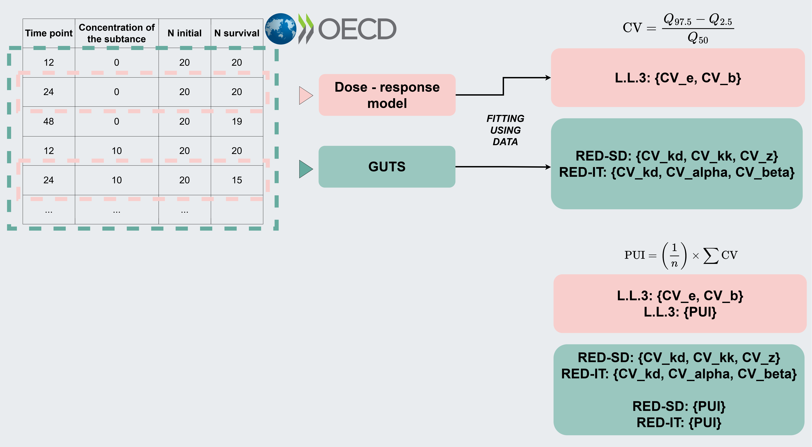
The Data Analysis \(\rightarrow\) ML Bridge
In regulatory ecotoxicology, black-box AI faces justified skepticism. Every step toward ML must be documented.
1. Descriptive
Compute the precision metrics and visualise them by experimental design feature.
1.1 Precision Metrics
- Coefficient of Variation (CV): Individual parameter uncertainty.
- Parameter Uncertainty Index (PUI) (Bauer et al., 2024): Global precision metric.
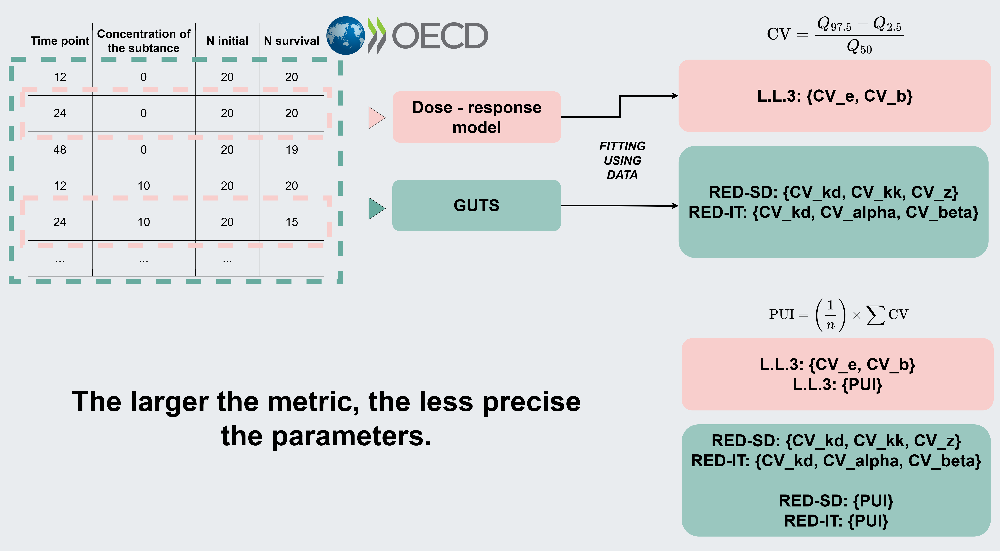
Full 4-Step Documented Bridge
Insight 3 from Part 1 in action: exhaust classical statistical methods before invoking non-linear Machine Learning.
1. Descriptive
Compute precision metrics (CV, PUI) and visualise them across design features.
Metrics
- CV: Individual parameter uncertainty.
- PUI (Bauer et al., 2024): Global parameter precision.
2. Univariate
Test 1-vs-1 monotonic relationships between design features and precision.
Method
- Spearman coefficient across experimental design features and precision metrics.
3. Multivariate
Quantify how much variance is captured by linear multivariate combinations.
Method
- Redundancy Analysis (RDA) relating design features to precision metrics.
4. ML Audit
Capture non-linear relationships and feature interactions.
Method
- Random Forest (\(Y \sim X\)) predicting precision metrics from design features.
Step 1 (Descriptive): The Feature Translation Matrix
The Feature Translation Matrix
We translated binary OECD and mechanistic rules into continuous numerical gradients.
| Binary Rule | Continuous Feature |
|---|---|
| Max Spacing | actual_max_spacing |
| Min 5 Timepts | num_timepoints |
| Effect Range |
max_mortality_delta & partial_effect_concs |
| Extended Duration | extended_hours |
Step 1 (Descriptive): Effect Range vs. PUI
The Feature Translation Matrix
Focusing on Effect Range features against global parameter precision (PUI).
| Binary Rule | Continuous Feature |
|---|---|
| Max Spacing | actual_max_spacing |
| Min 5 Timepts | num_timepoints |
| Effect Range |
max_mortality_delta & partial_effect_concs |
| Extended Duration | extended_hours |
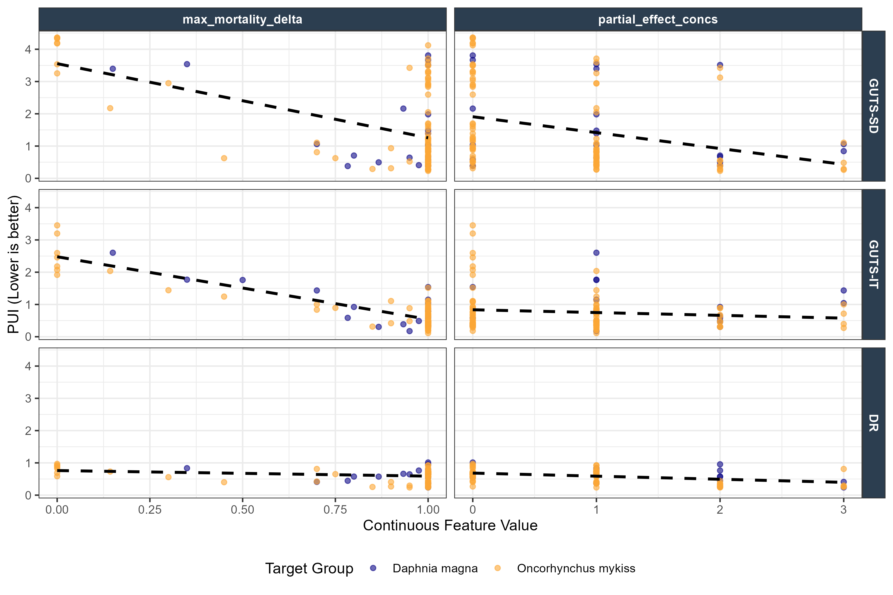
Steps 2 & 3 (Univariate & Multivariate): Hitting the Linear Ceiling
- Spearman correlations: Distinct, weak, or scattered signals across individual parameters and experimental design features.
- Redundancy Analysis (RDA): Linear multivariate modelling explains a maximum of ~25% of total variance across models.
Classical linear tools are exhausted \(\rightarrow\) empirically justifying Stage 2 (non-linear ML).
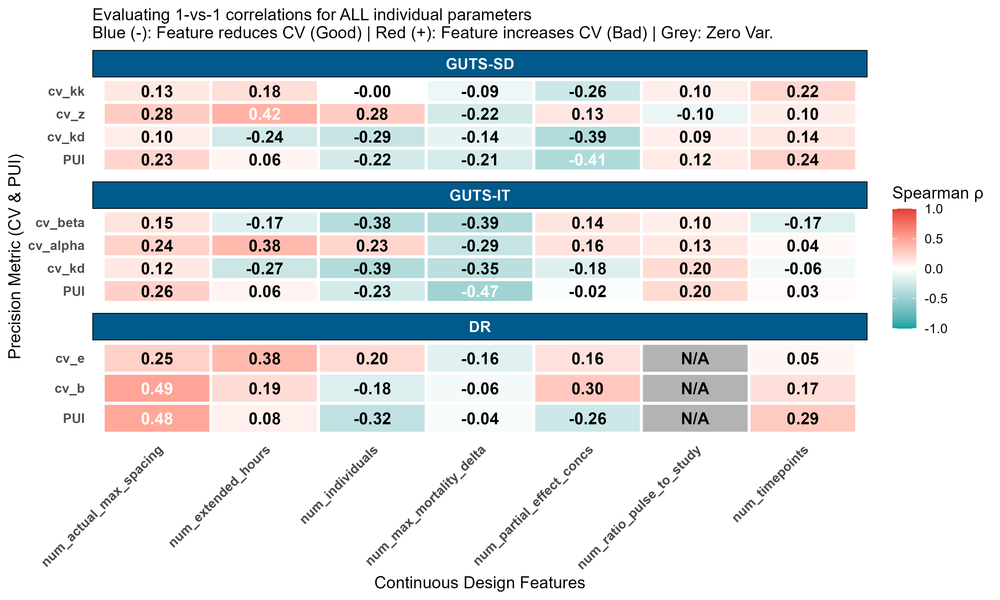
Step 4 (ML Audit): Random Forest Feature Importance (%IncMSE)
\[\%\text{IncMSE} = \frac{\text{MSE}_{\text{permuted}} - \text{MSE}_{\text{base}}}{\text{MSE}_{\text{base}}} \times 100\]
%IncMSE (Percentage Increase in Mean Squared Error) is a feature importance metric: a high value means Random Forest predictions of parameter precision became less accurate when that design feature was randomly permuted.
- Maximum Mortality Delta and Number of time points are almost equally relevant across all three models.
- DR precision is heavily driven by capturing Partial Effect Concentrations.
Model sanity check (OOB \(R^2\) on global PUI, \(n = 112\text{--}114\)):
GUTS-IT: 68.4% | DR: 40.6% | GUTS-SD: 24.5%
(Confirms real non-linear signal behind %IncMSE on PUI; individual cv_* ratios exhibit numerical instability near \(\log_{10}(\theta)\approx 0\).)
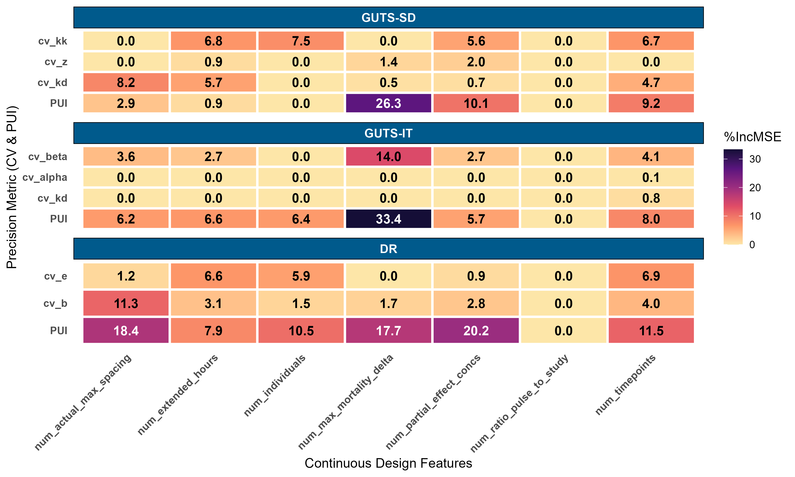
Applying the Insight: Why Historical Data Are Not Enough
Recap from Stage 2 Audit
Maximum Mortality Delta and Number of time points co-drive parameter precision across models.
Structural Limitations of Retrospective Data
- Historical datasets leave large gaps in the experimental design space (heavily biased toward legacy OECD protocols).
- The relationship is non-linear and multidimensional—we cannot yet extract robust numeric thresholds.
- Open regulatory question: If a laboratory design inflates parameter uncertainty (high PUI), how severely does it degrade the final \(LC_{50}\)?
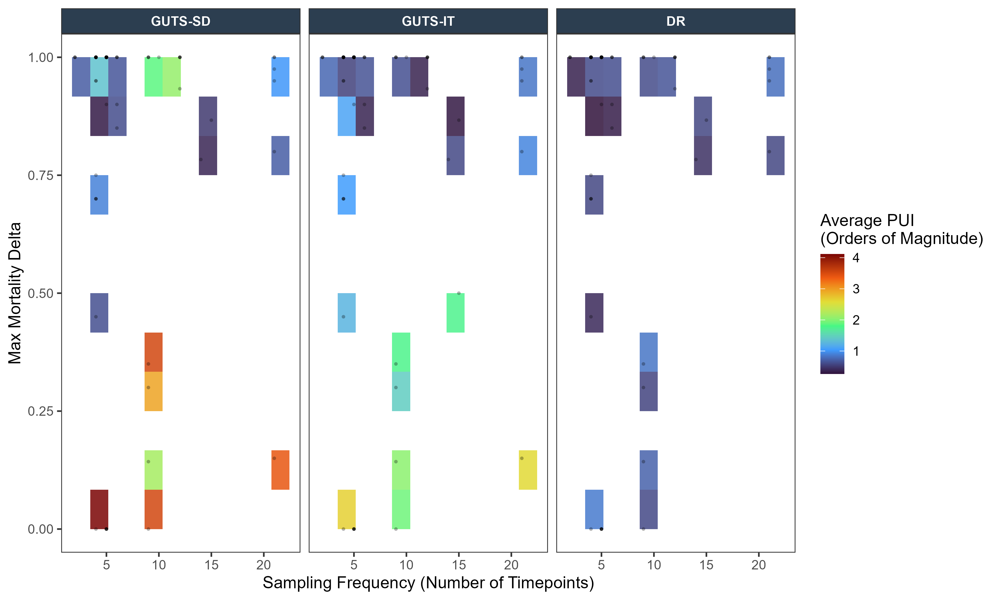
Next Step: From Retrospective Audit to Prospective Simulation
Prospective Simulation & Validation Pipeline
Empirical Archetypes (organism–substance parameter distributions) \(\rightarrow\) Synthetic Experimental Scenarios (Poor / Regulatory / Model-Guided) \(\rightarrow\) Forward GUTS/DR Simulation & Refitting \(\rightarrow\) ML Meta-Model Training \(\rightarrow\) Validation via Data Thinning.
Immediate Goal
Move from identifying which features matter to quantifying actionable design thresholds that balance statistical precision with the 3Rs.
Longer-Term Thesis Horizon
Once reliable model-guided designs are validated, extend the GUTS framework to combined chemical + climate-change stressors.
Take-Home Messages
- The Legacy Mismatch: Standardised OECD experimental designs are not optimised for dynamic mechanistic models like GUTS.
- Justified, Explainable ML: Pairing a mechanistic White Box with an interpretable Grey Box meta-model—only after exhausting classical statistics—preserves regulatory auditability.
- Audit Before Simulation: Retrospective ML shows what drives precision and exposes historical data gaps, justifying targeted synthetic simulations.
Workshop Website & Open Materials
QR code & repository link
Open Methodological Challenges: Ecotox \(\leftrightarrow\) AI/Bioinformatics Discussion
Moving from our current Proof-of-Concept to the extended Stage 1 + Stage 2 pipeline—your input is welcome.
1. Multi-Response Learning
Adding Goodness-of-Fit (GoF) and Predictive Capacity alongside Precision (CV, PUI, GoK) yields correlated targets \(Y\).
With \(n \approx 200\) and collinear design features \(X\), should we move to multi-output algorithms (e.g., Multivariate Random Forests) or keep separate single-target models?
2. Leakage-Free Data Splitting
To evaluate GUTS Predictive Capacity on unseen data without data leakage across shared species, chemicals, or source studies:
How should we structure grouped / stratified splits on an unbalanced ecotoxicological database?
3. Efficient Optimization Under 3Rs Constraints
In the prospective simulation phase, running Bayesian GUTS calibration across thousands of candidate designs is computationally heavy.
Could surrogate models + Active Learning / Bayesian Optimization guide the search under ethical and budget constraints?
Thank you & Questions
FR BioEEnViS Knowledge-Sharing Seminar · LBBE / INRAE · December 16, 2026
Built with Quarto